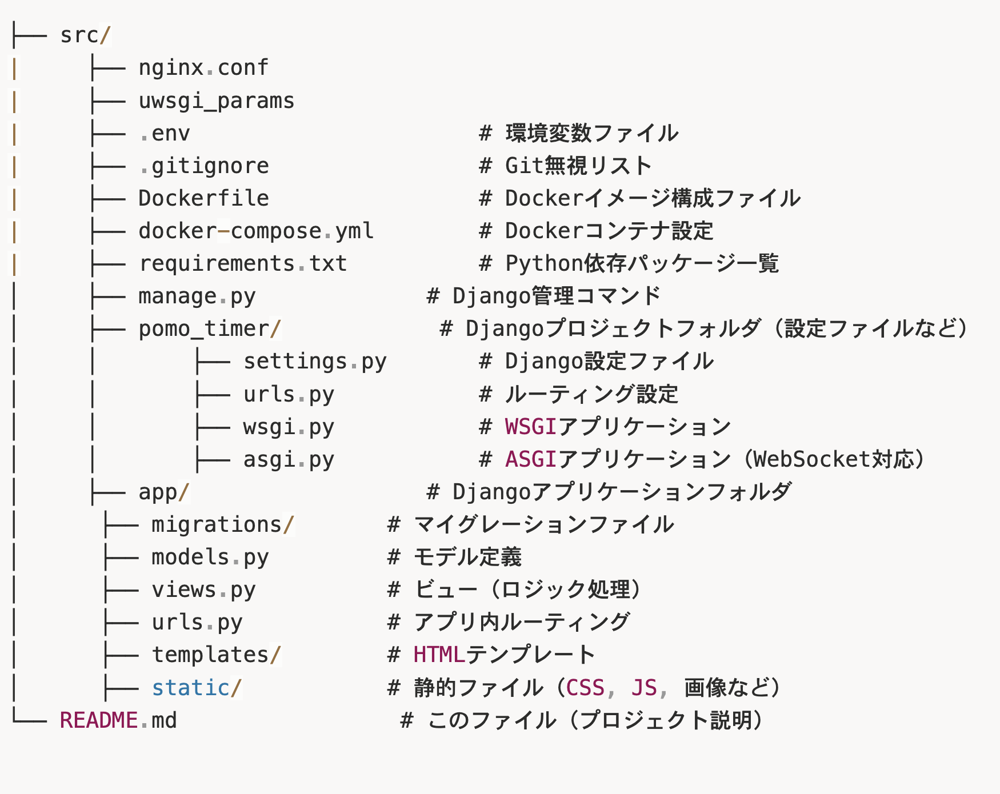
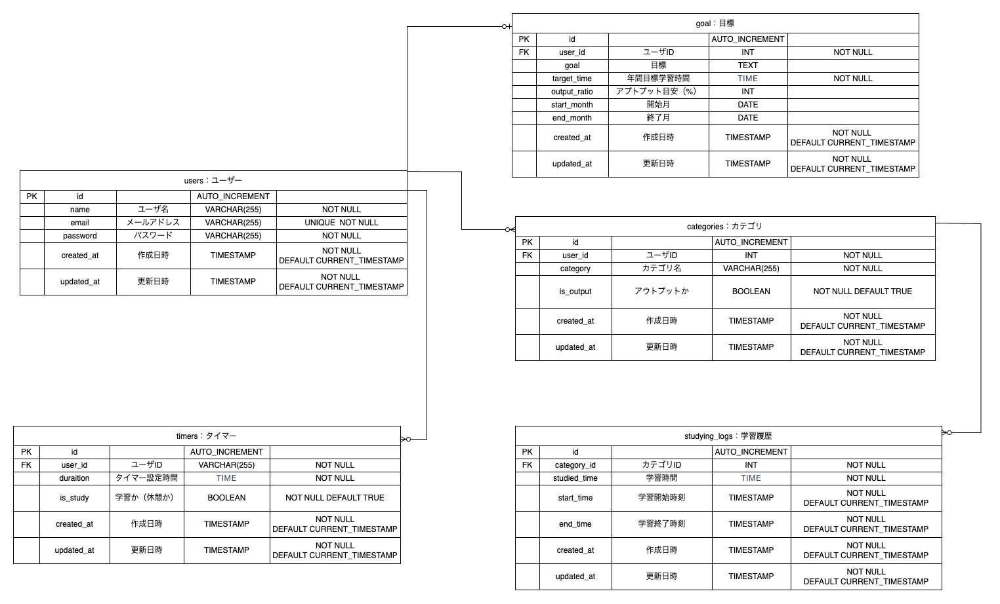

pomotimer
~アウトプットを意識するための学習時間管理アプリ~
【概要】
ポモドーロタイマーを利用して学習時間を管理し、累積学習時間やアウトプットの比率を可視化します。
- 学習時間を記録し、グラフにして可視化
- 計測開始時にインプット・アウトプットを指定することで、アウトプットを意識した学習管理ができます。
【主な機能】
⭐️：担当部分
＜基本機能＞
- 認証機能（新規登録・ログイン・ログアウト）⭐️
- タイマー機能（学習/休憩時間開始・一時停止・終了）
- グラフ機能（日・月・年ごとの集計）
【制作期間】
2ヶ月（2025年1月〜3月）
【チーム体制】
4名チーム（フロント、バックエンド、インフラ）
自分の役割：フロントエンド/バックエンド
【担当範囲】
- 認証機能のフロントエンド・バックエンドの実装
【技術スタック】
-
Frontend


-
Backend


-
Database

-
Infra


【アーキテクチャ】
*以下はチーム開発時に作成した全体設計です。
-
ディレクトリ構成

-
ER図

-
インフラ構成図

【意識した点】
- Djangoの構造（Model/View/Template）やappサーバー（uWSGI）との関係についての理解
- 前回に引き続き、チームでのコミュニケーションを活発にするための振る舞い
- CSSで基本的な画面構成を構築できるようになること
【苦労した点】
- Djangoにはじめて挑戦したが、MTVモデルのデータフローやappサーバー（uWSGI）との連携など、システムへの理解が不十分であり、開発スピードが上がらなかったこと
- 認証部分のCBVについて、ブラックボックス化されている処理の流れを公式ドキュメントやソースコードから読み取り理解すること
- 課題設定や設計意図についてチームで深く議論する環境が作れなかったこと
【課題】
- 技術理解が追いつかず、担当部分の機能が動く状態にすることで精一杯となり、可読性や堅牢性といった点を考慮できなかった。
- DjangoのCBVについて、裏側で何が行われているかを理解すること
- JavaScriptでの非同期処理について理解を深めること
- 誰のどんな課題を解決するのかという点に基づき、UI/UXやMVP機能以降の方向性を検討すること